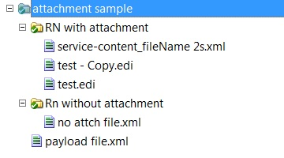

RNIF messages with attachments can be sent using the PUT command with the
-MUL option. See RNIF Command Reference for details about using
the -MUL option.
When you use the
-MUL option:
- each subfolder within the outbox is sent as one RNIF message with attachments.
- the file that starts with the name service-content_ is considered
the payload. The rest of the files are attachments. If there is no file that stats with
service-content_, no message is sent and an error is logged.
- if there is more than one file whose name starts with
service-content_, an error is logged.
- in the generated MIME multipart message for the payload:
- the file name used for the payload strips off the
service-content_ part of the name.
- the Content-ID of the header is the name of the attachment.
For example, assume you want to send RNIF messages with attachments and the outbox contains
three folders with the following structure:

Three RNIF messages would be sent as follows:
- The RN with attachment folder contains three files:
service-content_fileName 2s.xml is the payload. The other two files,
test.edi and test – Copy.edi, are the
attachments.
When the RNIF MIME multipart message is constructed the
service-content_ part of the payload file name is stripped and
fileName 2s.xml is used as the payload file name.
Note: If
there are multiple files in the folder, only one file name should start with
service-content_.
- The RN without attachment folder contains only one file, which is the
payload. This payload is sent without attachments.
- payload file.xml is directly under the source directory. This is sent
as payload without attachments.